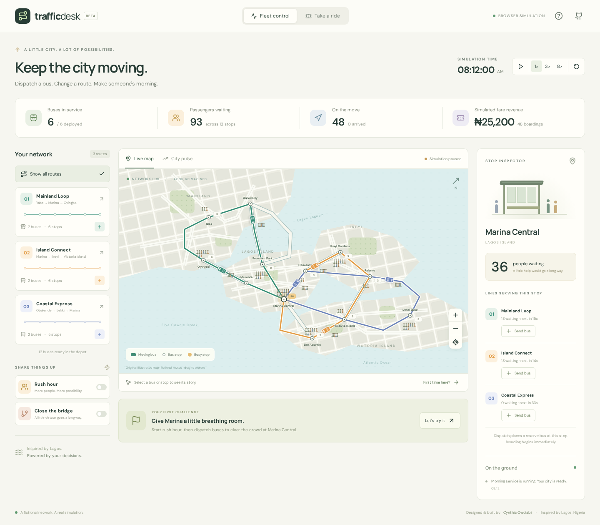

Cynthia Owolabi / Engineering case study
TrafficDesk

Closing a bridge should change service, queues and passenger journeys—not just change a line’s color on a map.
Domain and constraints
TrafficDesk is an original Lagos-inspired transit simulation informed by the urban transit work described in my CV. It uses fictional routes, synthetic demand and fares, with no employer code or private data. React renders an SVG network driven by a deterministic TypeScript simulation.
One model for operators and passengers
The network starts with six buses across three one-way loop routes and 12 stops. Each bus has 32 seats; depot dispatch is capped at 18 buses. A demo ticket represents a passenger inside the same queue and boarding accounting used by the operator view. Boarding records revenue once, and arrival removes that passenger from the bus.
A bridge closure allows a bus already crossing to finish its leg, then holds later departures at University. Opening the alternate route resumes departures along a longer path. Breakdowns keep passengers aboard until repair.
Try an intervention
- Start Rush hour and select Marina Central. Observe the queue.
- Dispatch a reserve bus and watch capacity-limited boarding reduce the queue.
- Close the bridge, then open the alternate route to restore departures.
- Switch to Take a ride, get a ticket and follow the passenger to arrival.
- Open City pulse and compare six versus nine buses under the same seeded 120-second demand.
Correctness and design decisions
Passenger conservation and capacity are tested across demand, boarding, incidents and repair. Seeded demand and isolated comparison states make the intervention repeatable without changing the active city. Time pauses when the tab is hidden; reduced-motion preferences start the simulation paused. The map supports keyboard selection.
Using a browser-local reducer keeps the demonstration free to run and easy to inspect. It also means refresh resets state. A backend would add persistence and shared operation, but neither is necessary to demonstrate these simulation decisions.
Evidence
Ten simulation tests cover conservation, deterministic replay, closure/detour behavior, complete tickets, fleet limits and causal intervention comparison. Four browser scenarios cover controls, complete rider journeys, responsive and keyboard behavior, and reduced motion with no external data services.
npm ci npm test npm run build npm run test:e2e
Limits
This is not a calibrated transport model. Vehicles have constant speed; there is no road congestion, collision avoidance, transfer planning or real fare settlement. Reserve dispatch places a bus at a selected stop immediately. Map figures show a capped sample; numeric badges carry actual counts. Employer outcomes remain separate from project results.